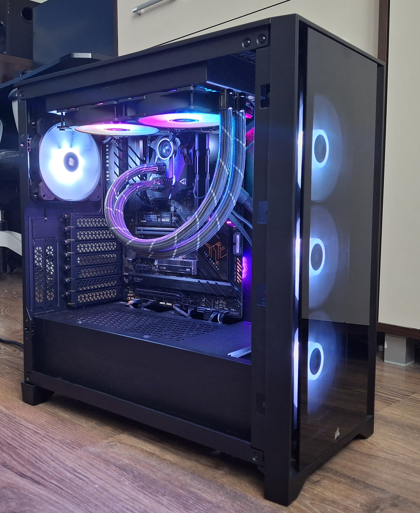

Micha1207 | Start Electronics & Computer science!
Page in HTML
Who is this anyway?
Hi There! My name is Michael. I live in Poland. My hobbies include:
- Electronics,
- Computers,
- Coding and...
- LINUX!
My PROJECTS
My projects are available on My GitHub.
E-LECTRON
E-LECTRON is a name of a company I want to start with my friend Max.
How do I do my computing?
I own 2 computers running Ubuntu GNU/Linux (or just Linux). Now, it is 24.10 version.
- First and main: the Raspberry Pi 5
- and a Custom build PC with Intel Core I7 12700K CPU
The Raspberry:

Source: Michael's Photo Gallery
To the Raspberry, I connected:
- 128GB M.2 NVMe,
- RTC Battery,
- Official Raspberry Pi 5 cooler, but with fan from Argon NEO 5 NVMe
The Raspberry Pi 5 model B specs are here.
And my PC, which I call 'server' (because I serve Ollama AI + OpenWebUI for help with my projects)
And my Photo of The Month:

My Idols
My Idols are:

Linus Torvalds
Source: www.britannica.com
Linus created Linux Kernel - the "base" for all Linux Distributions like Ubuntu, Debian, Raspian, Manjaro, Arch Linux, etc, etc. He wrote Linux Kernel - from zero - in 1991. He is my idol number 1. And he still maintains Linux Kernel! Plus, he has nice quotes

Steve Jobs
Source: upload.wikimedia.org
{kind=link}
Steve - Very Clever person, Apple co-founder. You may be asking: "Why does he like Steve Jobs if he's GNU/Linux user?!" Well, he found Apple - a company, that revolutionized computers and phones. Also, he has nice, motivating quotes (Listed here)
Their Quotes
Here are my favourite quotes from Linus and Steve:
Linus Torvalds: Talk is cheap. Show me the code.
Steve Jobs: It takes a lot of hard work to make something simple.
Web Pages about electronics
Check out the DroneBot Workshop webpage

Source: www.dronebotworkshop.com

Source: jeffgeerling.com
Music
Yes, I like music. It helps me while coding (somehow) 😉 Example: Wind of Change.